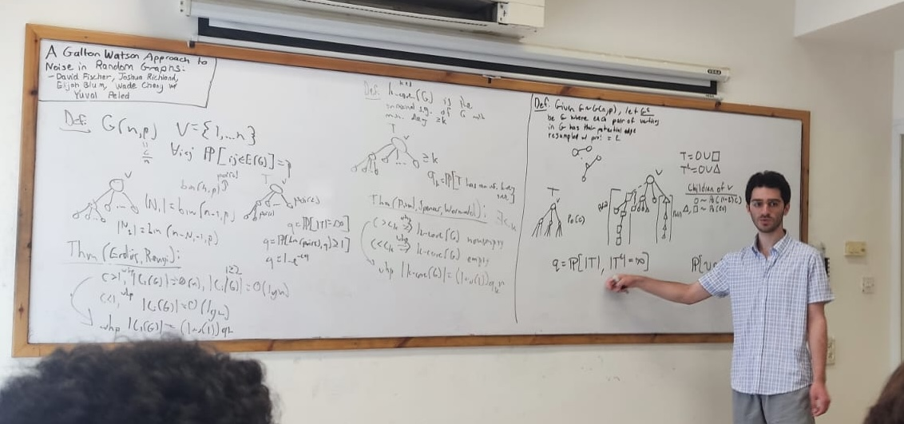

I am a PhD student at the Courant Institute of Mathematical Sciences. I am an organizer of the GSPS seminar.
Papers
Elijah Blum, YuiTo Cheng, David Fischer, Josh Richland, Yuval Peled A Galton Watson Approach to Noise in Random Graphs in progress
Xingyu Zheng, Matthew Venezia, Elijah Blum, Ullas V. Pedmale, Dave Jackson, Przemyslaw Prusinkiewicz, Saket Navlakha Reticulate leaf venation in Pilea peperomioides is a Voronoi diagram bioRxiv 2024.07.01.601217
Expository notes
Independent reading report for MATH 4340: Honors Algebra on Wallpaper Groups
Independent reading presentation handout for MATH 4530: Topology on Presentations of the Knot Group
Conferences
AMS - PME Undergraduate Student Poster Session, Joint Mathematics Meeting 2025, Seattle, WA